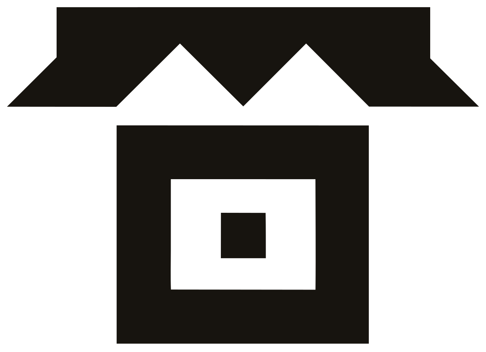

Tandalibro de marca
05
Tres dibujos distintos, no tres tamaños del mismo · impresos aquí a tamaño real
Ícono
Qué se cae en cada escalón
El sello no se reduce: se poda. A 48 px cabe el festón de cinco picos; a 32 se quedan
tres; a 16 el festón desaparece del todo y el cuadradito de dentro crece, porque es lo
último que se puede perder — es la persona.
Regla dura
Por debajo de 16 px no existe el sello. Se pone la palabra Tanda, o no
se pone nada.
48 px · entero
Cinco picos, marco de 3 px, ventana calada y cuadro dentro.

32 px · podado
Se cae de cinco picos a tres. El resto no se toca.
16 px · sin festón
Toldo liso y cuadro interior un 50 % mayor, o se cierra.
Los mismos tres, ampliados ocho veces, para ver la poda
48
32
16
Los tres son archivos distintos y existen por separado en
logo/. No se interpola entre ellos: por debajo de 40 px
se sirve el de 32, y por debajo de 24 px el de 16.
El festón se pierde porque a 16 px un pico mide medio píxel y se convierte en un
borde sucio. La ventana calada y el cuadro de dentro sobreviven porque son las
dos cosas que hacen que el sello signifique algo.
El otro sello
El hueco cuadrado donde va una persona
El mismo cuadrado del centro del ícono, crecido. Con foto, la lleva. Sin foto —el caso
del primer día— lleva iniciales sobre la tinta del local; y si no hay ni tinta, la
trama que le toque por su nombre.
YH
Con tinta
del local
del local
KB
Sin nada:
trama 00
trama 00
DC
Sin nada:
trama 03
trama 03
La casa
(solo Tanda)
(solo Tanda)
Cómo se reparte la trama
trama = hash(nombre) mód 6
Determinista, no aleatoria: el mismo salón lleva siempre la suya, y dos vecinos casi
nunca coinciden. Son las mismas seis de la página 03.
Las iniciales van en Archivo 700 al 118 % de anchura, a un tercio del lado del cuadro.
Papel sobre tinta filtrada: nunca por debajo de 4,70:1.